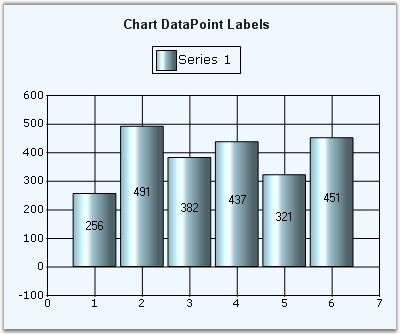
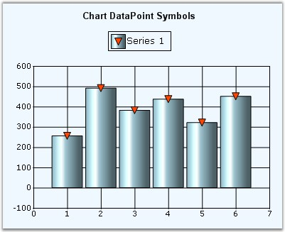

Labels
Data Points in a series can be adorned with text labels as well as custom symbols to provide additional information regarding the specific data points.
Text labels can be rendered at the data points using the DisplayText, Text and TextFormat settings. They can further be customized using the TextColor, TextOffset and TextOrientation settings.

Figure 230: Black Color DataPoint Labels with TextOrientation= "RegionCenter", TextFormat="{0}"
Tooltips
Refer the Tooltip topic for more information on this.
Symbols
Built-in or custom symbols can be rendered at the data points to emphasize importance of certain data points. See Symbol setting for more information.

Figure 231: "OrangeRed InvertedTriangle" Symbols in the Series Points